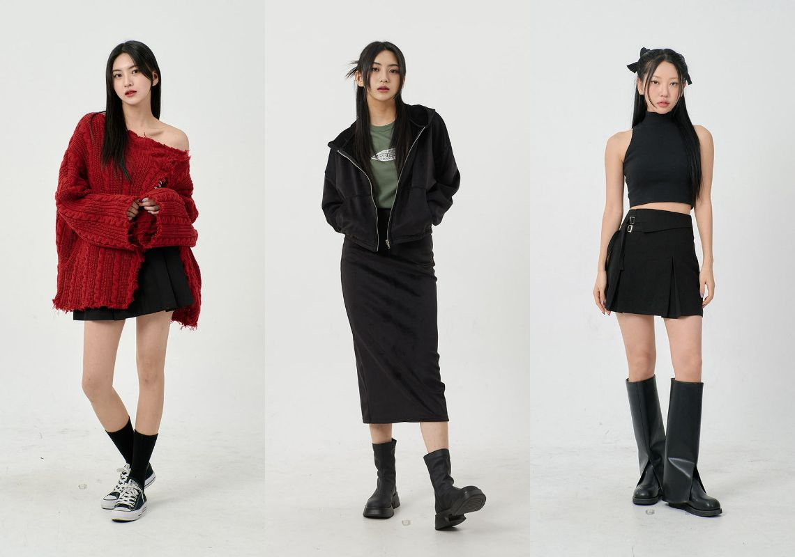
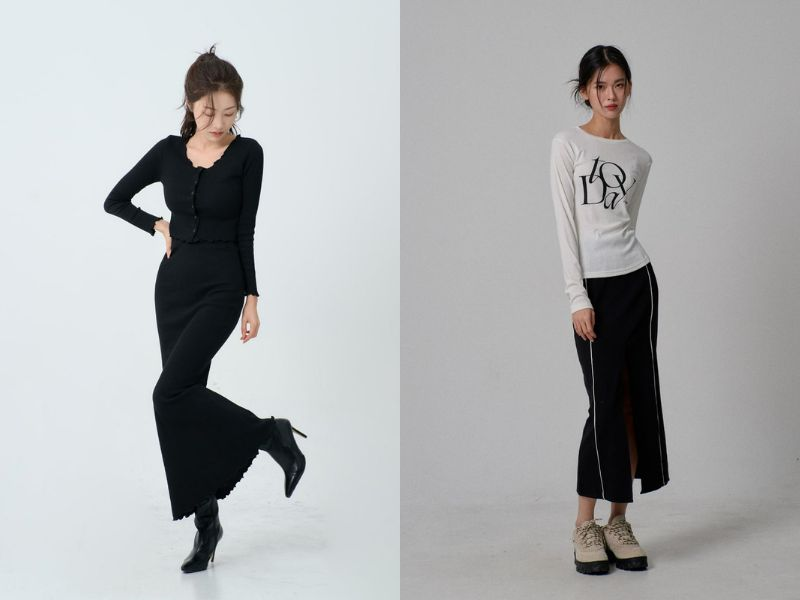

15+ cách phối đồ với chân váy đen tạo phong cách thời thượng
14/04/2023 THỜI TRANG, THỜI TRANG NỮ

Chân váy đen là một item thời trang tuy đơn giản nhưng lại mang đến vẻ ngoài quyến rũ và tạo thêm điểm nhấn cho outfit của bạn. Shopee Blog sẽ bật mí cho bạn những cách phối đồ với chân váy đen cực sáng tạo để tạo nên phong cách riêng cho bản thân qua bài viết sau đây nhé!
Một số kiểu chân váy đen phổ biến
Chân váy là một item không thể thiếu trong tủ đồ của các cô nàng hiện đại và sành điệu. Shopee Blog sẽ giới thiệu đến bạn một số loại chân váy đen nổi bật và phổ biến nhất trong bài viết dưới đây nhé!
Chân váy dài đen
Chân váy dài đang là một item thời trang cực kỳ hot dạo gần đây bởi tính dễ phối đồ và phù hợp với các dịp đi chơi dạo phố hoặc tham dự các buổi tiệc quan trọng. Bạn có thể phối chân váy dài đen với một chiếc áo thun trơn hoặc áo croptop, đây là cách phối đồ đơn giản nhưng phù hợp với mọi hoạt động như đi học, đi làm hoặc đi chơi.

Phối đồ đơn giản nhưng vẫn không kém phần thanh lịch với chân váy dài đen
Phối đồ đơn giản nhưng vẫn không kém phần thanh lịch với chân váy dài đen
Chân váy đen ngắn
Với những cô nàng chiều cao khiêm tốn, chân váy ngắn đen là một lựa chọn hoàn hảo để tạo hiệu ứng ăn gian chiều cao một cách hiệu quả. Nếu bạn yêu thích phong cách đơn giản và cá tính, chỉ cần kết hợp chân váy với một chiếc áo phông rộng, bạn đã có một set đồ đẹp và phù hợp cho các buổi gặp gỡ bạn bè hoặc thậm chí các chuyến đi biển trong những ngày hè nóng bức.
Năng động và trẻ trung cùng cách phối đồ với chân váy đen ngắn
Để thăng hạng cho trang phục, bạn có thể phối thêm áo khoác hoặc áo gile cùng tông màu với chân váy, giúp tăng thêm ấn tượng trong mắt người đối diện. Bạn có thể tự tin diện trang phục này và thể hiện phong cách riêng của mình một cách tự tin.
Chân váy tennis đen phối với áo gì? Áo croptop năng động trẻ trung
Chân váy tennis đen phối với áo gì? Nếu bạn muốn khoe nét cá tính và thời trang thì có thể lựa chọn cách phối đồ chân váy tennis đen và áo croptop. Đây là một phong cách thời trang phá cách, tạo sự tự tin và giúp bạn nổi bật hơn trong mắt mọi người xung quanh. Bạn có thể phối chân váy tennis đen với các kiểu áo croptop để tạo cho bản thân những phong cách thời trang khác nhau
Cá tính hơn khi phối đồ cùng chân váy tennis đen
Bạn có thể kết hợp thêm giày thể thao, áo khoác jean, nón lưỡi trai hoặc các phụ kiện khác để hoàn thiện và nâng cấp cho bộ trang phục của mình.
Tổng kết
Vậy là Shopee Blog đã mang đến cho bạn một số gợi ý về cách phối đồ với chân váy đen để tăng thêm vẻ đẹp và sự tự tin. Hy vọng những tips từ Shopee Blog sẽ giúp bạn biến tấu phong cách thời trang phù hợp với bản thân.
Shopee Blog luôn cập nhật những bài viết mới nhất về tips phối đồ nữ sành điệu và cá tính giúp các bạn nữ tự tin hơn trong các hoạt động hàng ngày. Bạn có thể tìm kiếm hashtag #ShopeeHaul hoặc #ShopeeHaulOnShopeeBlog trên các trang mạng xã hội để tìm hiểu thêm về thời trang nữ cũng như tạo được phong cách riêng và tỏa sáng trong mọi dịp nhé!